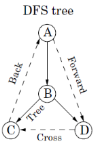
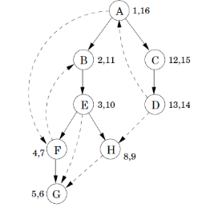
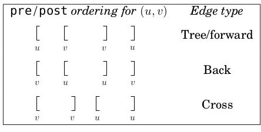
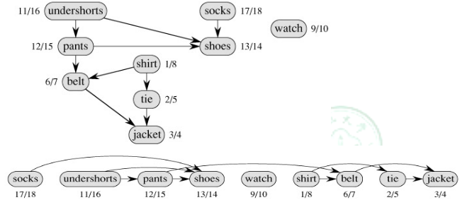

有向图边的类型
有向图边的类型
有向图边有如下几个类型：
- tree edge 树边
- foward edge 前向边
- back edge 回边
- cross edge 横跨边
一张图即可解释：

判断有向图边的类型
在DFS的过程中，可以直接用pre, post 值来判断；当然首先得知道如何计算 pre, post 值，这同样可以用一张图来解释（该图数对为 pre,post）：

- 如果一个点pre和post值不存在，说明该点未被访问过，是一个 树边 （例如图中
F->G) - 如果
pre(u) < pre(v) < post(v) < post(u)，说明 u 肯定 v 的祖先- 若有 v->u， 则该边是一个 回边；（例如图中
F->B) - 若有 u->v, 且显然此时pre(v)和post(v)都存在，不可能是树边，则该边是 前向边 （例如图中
E->G)
- 若有 v->u， 则该边是一个 回边；（例如图中
- 对于 横跨边，已经是分属两条不同的深搜路径，所以必然的，两个点的(pre,post)区间没有重叠（例如图中
D->H
可以总结为下图：

应用
判断有向图是否有圈
等价于判断图中是否有 回边
进行拓扑排序
首先要知道什么是拓扑排序：拓扑排序就是将结点依次排序，使得图内的边都是从该序列前面的点流向后面的点（显然前提是这个图不能有环）
例：穿衣服问题，见下图。

正如图中所示，只要按Post值倒序就可以了
当然这题还有另外的解法：不断从图中删去in-degree为0的点（source）
转载请注明来源，欢迎对文章中的引用来源进行考证，欢迎指出任何有错误或不够清晰的表达。可以在下面评论区评论，也可以邮件至 jaytp@qq.com
文章标题:有向图边的类型
文章字数:402
本文作者:Jeff
发布时间:2018-11-26, 15:02:26
最后更新:2020-04-25, 23:36:31
原始链接:http://zys980808.github.io/2018/11/26/Algorithm/graph-edge-type/版权声明: "署名-非商用-相同方式共享 4.0" 转载请保留原文链接及作者。